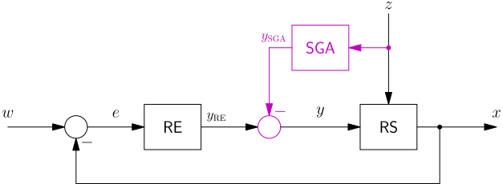
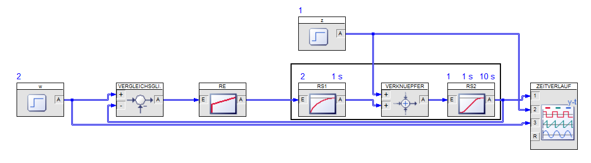

7 Störgrössenaufschaltung
Nachdem wir die Vorsteuerung kennengelernt haben, werden wir in diesem Unterrichtsblock die Störgrössenaufschaltung (SGA) anschauen, bei der wir dieselbe Grundidee wie bei der Vorsteuerung anwenden. Bei der Störgrössenaufschaltung versuchen wir, eine Störgrösse durch eine gezielte Stellgrössenveränderung zu “kompensieren”.
- Du weisst, was die Voraussetzungen für die Implementierung einer Störgrössenaufschaltung sind.
- Du kannst eine Störgrössenaufschaltung für eine gegebene Regelstrecke entwerfen und ihre Wirkung beurteilen.
7.1 Motivation
Die Grundidee der Vorsteuerung können wir auch anwenden, um Störgrössen zu bekämpfen:
Wenn wir die Grösse und den Eingriffspunkt einer Störgrösse z kennen, können wir ihr entgegenwirken, indem wir die Stellgrösse mittels einer Steuerung - der sogenannten Störgrössenaufschaltung - gezielt modifizieren.
Das Blockschaltbild der Störgrössenaufschaltung sieht demjenigen der Vorsteuerung ähnlich, die “Steuerung” berücksichtigt hier nun aber nicht die Führungsgrösse, sondern die Störgrösse. Das bedeutet, dass hier primär das Störverhalten im Vordergrund steht.

Ähnlich wie bei der Vorsteuerung wird die Stellgrösse des Reglers mit einem zusätzlichen Stellgrössenanteil überlagert, welcher der Störgrösse entgegenwirkt.
y = y_{\mathrm{RE}} - y_{\mathrm{SGA}} \tag{7.1}
7.2 Voraussetzungen
Eine Störgrössenaufschaltung ist nur möglich, wenn die Störgrösse z gemessen werden kann und bekannt ist (bzw. abgeschätzt werden kann), wo/wie die Störgrösse auf die Regelstrecke bzw. Regelgrösse einwirkt. Eine Störgrössenaufschaltung ist daher i. Allg. mit Mehraufwand verbunden.
Das obige Blockschaltbild ist allgemein gehalten, d. h. der genaue Eingriffspunkt der Störgrösse ist dort nicht ersichtlich. Wir verwenden daher das folgende Blockschaltbild für den weiteren Verlauf.
☝🏼 Wie bei der Vorsteuerung kann die Störgrössenaufschaltung komplett unabhängig von der Regelung entworfen werden, d. h. man kann sich Regler/Rückführung dafür “wegdenken”. Die Störgrössenaufschaltung ist wie die Vorsteuerung letztlich eine Steuerung.
7.3 Entwurf der Störgrössenaufschaltung
Beim Entwurf der Störgrössenaufschaltung erweist sich das Rechnen mit Übertragungsfunktionen (Frequenzbereich) erneut als besonders vorteilhaft.
☝🏼 Für die folgenden Überlegungen ignorieren wird den Regler und die Rückführung.
Als erstes überlegen wir uns, wie sich die Störgrösse z auf die Regelgrösse x auswirkt und denken uns dafür die Störgrössenaufschaltung (SGA) noch weg. Betrachten wir Abb. 7.2, so sehen wir, dass die Störgrösse zwischen den beiden Streckenteilen eingreift, d. h. wir können den Zusammenhang zwischen Stör- und Regelgrösse folgendermassen schreiben.
\textsf{ohne SGA:} \quad X = F_\mathrm{RS_2} \cdot Z
☝🏼 Da wir im Frequenzbereich sind, bezeichnen wir alle Signale mit Grossbuchstaben, z. B. X, Z. Signale und Frequenzgänge sind immer Funktionen von j \omega, d. h. man könnte auch X(j \omega), Z(j \omega) schreiben. Wegen der Übersichtlichkeit lassen wir im Folgenden die Abhängigkeit von j \omega immer weg.
Um die Störgrössenübertragungsfunktion, also die Übertragungsfunktion von der Stör- zur Regelgrösse, zu erhalten, stellen wir die obige Beziehung um.
\textsf{ohne SGA:} \quad \dfrac{X}{Z} = F_\mathrm{RS_2}
Dies ist intuitiv verständlich. Da die Störgrösse vor dem zweiten Streckenteil eingreift und somit den zweiten Streckenteil “durchläuft”, entspricht die Störgrössenübertragungsfunktion gerade F_\mathrm{RS_2}.
Wenn wir die Wirkung der Störgrösse auf die Regelgrösse verringern wollten, müssten wir diese Übertragungsfunktion verändern können. An F_\mathrm{RS_2} können wir aber nichts ändern, da es sich um die Regelstrecke handelt.
Nun kommt die Störgrössenaufschaltung ins Spiel. Wir messen die Störgrösse z und erzeugen damit über eine Steuereinrichtung (Störgrössenaufschaltung) \mathrm{SGA} eine Stellgrösse y_\mathrm{SGA}, die die Störung möglichst kompensieren soll. Da diese Stellgrösse der Störung entgegenwirkt, steht beim Summationsknoten ein Minuszeichen.
Y_\mathrm{SGA} = \textcolor{magenta}{F_\mathrm{SGA}} \cdot Z
Diese Stellgrösse durchläuft die beiden Streckenteile, was der Multiplikation mit F_\mathrm{RS_1} und F_\mathrm{RS_2} entspricht. Das heisst mit der Stellgrössenaufschaltung verändern sich die beiden oben erwähnten Beziehungen um einen zusätzlichen Anteil.
\begin{align*} \textsf{mit SGA:} \quad X ={}& F_\mathrm{RS_2} \cdot Z \\ &- F_\mathrm{RS_2} \cdot F_\mathrm{RS_1} \cdot \textcolor{magenta}{F_\mathrm{SGA}} \cdot Z \end{align*}
Schreiben wir das wiederum als Störgrössenübertragungsfunktion, erhalten wir: \begin{align*} \textsf{mit SGA:} \quad \dfrac{X}{Z} &= F_\mathrm{RS_2} - F_\mathrm{RS_2} \cdot F_\mathrm{RS_1} \cdot \textcolor{magenta}{F_\mathrm{SGA}}\\ &= F_\mathrm{RS_2} \cdot \left[1 - F_\mathrm{RS_1} \cdot \textcolor{magenta}{F_\mathrm{SGA}} \right] \end{align*}
Um die ideale Störunterdrückung (perfekte Kompensation der Störgrösse) zu erhalten, wird die obige Übertragungsfunktion gleich 0 gesetzt und nach F_\mathrm{SGA} aufgelöst. (Eine Störgrössenübertragungsfunktion von 0 bedeutet, dass sich die Störgrösse überhaupt nicht mehr auf die Regelgrösse auswirkt, was perfekt wäre!)
1 - F_\mathrm{RS_1} \cdot \textcolor{magenta}{F_\mathrm{SGA}} = 0
\textcolor{magenta}{F_\mathrm{SGA}} = \dfrac{1}{F_\mathrm{RS_1}} \tag{7.2}
Die letzte Beziehung bedeutet, dass die ideale Störgrössenaufschaltung eine Übertragungsfunktion aufweist, die der inversen Übertragungsfunktion des ersten Streckenteils entspricht. Dies macht auch intuitiv Sinn: Die Stellgrösse wird durch die Störgrössenaufschaltung genau so stark reduziert, dass die Störgrösse, die nach dem ersten Streckenteil dazukommt, genau kompensiert wird.
☝🏼 Wie du mittlerweile weisst, wird die inverse Übertragungsfunktion des ersten Streckenteils in der Regel nicht realisierbar sein. Wie bei der Vorsteuerung ist eine statische Kompensation oder eine dynamische Kompensation möglich. Da das Vorgehen identisch ist zur Vorsteuerung, wird hier darauf verzichtet und auf Abschn. 6.2.1 bzw. Abschn. 6.2.2 verwiesen.
7.3.1 Anmerkungen
Der zweite Streckenteil \mathrm{RS_2} spielt überhaupt keine Rolle für den Entwurf der Störgrössenaufschaltung. Wir hätten den zweiten Streckenteil also auch von Anfang an weglassen können.
Wenn die Störung am Eingang der Strecke eingreift, kann F_\mathrm{RS_1}(j \omega) = 1 gesetzt werden (dies ist gleichbedeutend mit dem Weglassen dieses Blockes). F_\mathrm{SGA}(j \omega) wird dann ebenfalls 1, was Sinn macht, da die Störgrösse dann gerade vollständig von der Stellgrösse abgezogen werden muss.
Wie bei der Vorsteuerung funktioniert eine Störgrössenaufschaltung nie perfekt, d. h. wiederum ist der Regler/Regelkreis für verbleibende Abweichungen und anderweitige Störeinflüsse/Nichtlinearitäten etc. zuständig, um die Anforderungen an die Genauigkeit zu erfüllen.
Bzgl. der Stellgrössenbeschränkung gelten dieselben Überlegungen wie bei der Vorsteuerung (vgl. Abschn. 6.2.3).
7.4 Praxisbeispiele
In einem Wärmetauscher wird die Austrittstemperatur des zu erwärmenden Mediums geregelt (Temperaturregelung). Wird z. B. der Massenstrom und/oder die Eintrittstemperatur dieses Mediums zusätzlich gemessen, kann mittels Störgrössenaufschaltung schneller auf Änderungen reagiert werden.
Bei einer Kompressor- oder Pumpenanlage, die ein Netz mit mehreren Verbrauchern/Abgängen speist, können die Volumenströme der Verbraucher als Störgrössen dienen. Damit kann die Leistung des Kompressors/der Pumpe bereits verstellt werden, bevor der Netzdruck deutlich ab- bzw. zunimmt.
Bei einer Drehzahlregelung eines Motors kann ein Lastmoment gemessen (oder abgeschätzt werden) und damit eine Störgrössenaufschaltung realisiert werden. Damit kann der Last schneller entgegengewirkt werden, als es mit dem Regler alleine möglich wäre (dieser würde erst bei einer Drehzahlabnahme reagieren).
Aufgaben
Nachfolgend ist ein Regelkreis mit einer zweiteiligen Regelstrecke abgebildet, wobei eine Störgrösse zwischen den beiden Streckenteilen eingreift.

Baue den Regelkreis in Boris auf und entwerfe den Regler gemäss CHR-Verfahren für gutes Führungsverhalten ohne Überschwingen.
Entwerfe eine statische Störgrössenaufschaltung.
Entwerfe eine dynamische Störgrössenaufschaltung.
Simuliere die Störsprungantwort und vergleiche folgende Fälle:
- keine Störgrössenaufschaltung,
- statische Störgrössenaufschaltung,
- dynamische Störgrössenaufschaltung
Simuliere in einer Simulation gleichzeitig das Führungs- als auch das Störverhalten. Die Führungsgrösse soll bei t=0\,\mathrm{s} auf 2 springen und die Störgrösse soll bei t=50\,\mathrm{s} auf 1 springen. Mit einem Schalter (Button) soll die dynamische Störgrössenaufschaltung zu- bzw. abgeschaltet werden können.